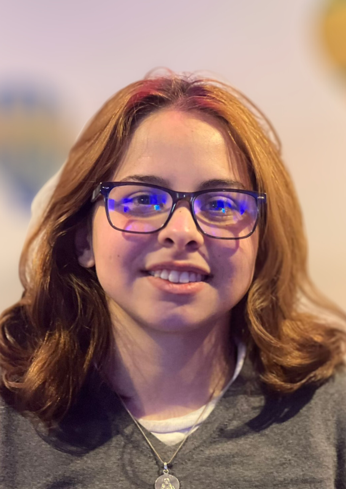

Acerca del Equipo

Mara Maqueira
En el equipo, mi rol fue guiar las tareas técnicas y apoyar a mis compañeras como asesora técnica. También me encargué de ayudar en la organización y asumí el liderazgo en la documentación del proyecto.
Ver CVContacto: maqueiramara@gmail.com
LinkedInMelisa Perazza
Mi rol en el equipo fue Especialista de Idiomas y tester. Mi tarea consistió en asegurar que el lenguaje empleado en el sistema fuera claro y comprensible para los usuarios.
Ver CVContacto: melperazza2@gmail.com
LinkedInMayra González
Mi rol en el equipo fue el de Project Manager. Coordiné las actividades relacionadas con las pruebas del proyecto y aseguré que el equipo trabajara alineado con los objetivos.
Ver CVContacto: estefanygonzalez1@hotmail.com
LinkedIn